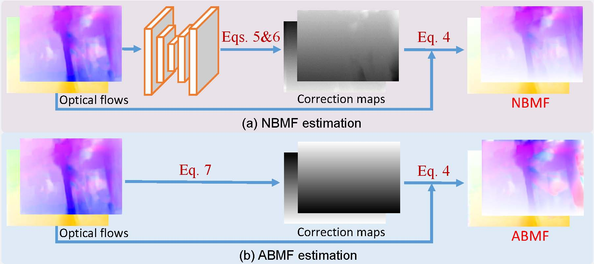

School of Electronics and Information, Northwestern Polytechnical University, Xi'an, China
With the ubiquity of rolling shutter (RS) cameras, it is becoming increasingly attractive to recover the latent global shutter (GS) video from two consecutive RS frames, which also places a higher demand on realism. Existing solutions, using deep neural networks or optimization, achieve promising performance. However, these methods generate intermediate GS frames through image warping based on the RS model, which inevitably result in black holes and noticeable motion artifacts. In this paper, we alleviate these issues by proposing a context-aware GS video reconstruction architecture. It facilitates the advantages such as occlusion reasoning, motion compensation, and temporal abstraction. Specifically, we first estimate the bilateral motion field so that the pixels of the two RS frames are warped to a common GS frame accordingly. Then, a refinement scheme is proposed to guide the GS frame synthesis along with bilateral occlusion masks to produce high-fidelity GS video frames at arbitrary times. Furthermore, we derive an approximated bilateral motion field model, which can serve as an alternative to provide a simple but effective GS frame initialization for related tasks. Experiments on synthetic and real data show that our approach achieves superior performance over state-of-the-art methods in terms of objective metrics and subjective visual quality.
Our pipeline involves two main processes. First, two initial GS frame candidates are obtained by the motion interpretation module. The details of BMF estimator (i.e. NBMF or ABMF) are illustrated below. Then, a GS frame synthesis module is proposed to reason about complex occlusions, motion profiles, and temporal abstractions to generate the final high-fidelity GS image at time $t\in[0,1]$.
Illustration of the initial BMF estimation, including (a) NBMF as well as its approximation (b) ABMF. Note that NBMF indicates the network-based bilateral motion field, while ABMF denotes the approximated bilateral motion field.
We show GS frame recovery at times 0, 0.5 and 1, respectively. The brighter the color in the bilateral occlusion mask, the higher the credibility. Our method can adaptively and efficiently reason about complex occlusions and temporal abstractions, leading to visually more satisfactory GS reconstruction results than RSSR.
Here, the estimated GS images in the fourth and fifth columns are obtained by warping the input RS frames according to the intermediate flows in the second and third columns, respectively. Our CVR estimates the intermediate flow with clearer motion boundaries than RSSR and thus generates more accurate and sharper GS content.
@inproceedings{fan_CVR_CVPR22,
title={Context-Aware Video Reconstruction for Rolling Shutter Cameras},
author={Fan, Bin and Dai, Yuchao and Zhang, Zhiyuan and Liu, Qi and He, Mingyi},
booktitle={Proceedings of the IEEE/CVF Conference on Computer Vision and Pattern Recognition},
year={2022}
}